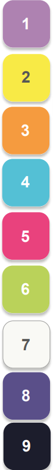

Не работает, так как селектор атрибута это = условный оператор,
проверяющий, у кого какой заданный атрибут.
В сокращённой записи свойства background порядок такой:
background: [цвет] [картинка] [повтор] [позиция] / [размер]
| The near-death EXPERIENCE brought new ideas to light, revealing PROFOUND TRUTHS about existence and mortality. |
| The near-death EXPERIENCE brought new ideas to light, revealing PROFOUND TRUTHS about existence and mortality. |
| The near-death EXPERIENCE brought new ideas to light, revealing PROFOUND TRUTHS about existence and mortality. |

Фигуры - #AC80AF
Фон - #F9F9F5
Текст - #02142B
https://github.com/Lit571/HTML-Minecraft-Server-Projects/blob/main/img/practice-1/IMAGE?raw=true